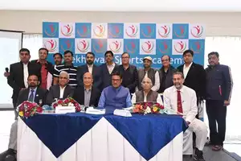
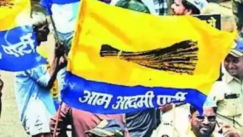
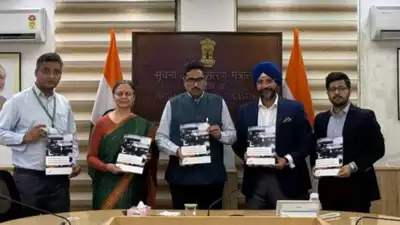

Velammal Vidyalaya, the force behind Chennai’s chess revolution, celebrated the win of its alumnus. D Gukesh and R Praggnanandhaa are the brightest prodigies of the school, and it offers expert training to hundreds of budding chess players. Since 2005 , it has produced several GMs, including Leon Mendonca, K Priyadharshan and B Adhiban. Vaishali R, sister of Praggu, is a prominent woman GM from the school. “Of course, they also have a champion like Anand to look up to,” S Velavan, chess co-coordinator at Velammal, said, adding its students who play chess have also done well in their studies
Jaipur: In a historic initiative to transform sports in rural Rajasthan, the Shekhawati Sports Academy (SPA) is being established on a sprawling 16-acre campus in Ramgarh Shekhawati, Sikar. This ambitious project, which is under construction, seeks to provide world-class sports infrastructure and training, unlocking grassroots talent and preparing athletes to compete in international tournaments, including the Olympics. The SPA president Yogendra Rajpuria, said, "Shekhawati Sports Academy will usher in a new era for sports in Rajasthan. Our vision, ‘Khelega Shekhawati, Jeetega Bharat,' reflects our dedication to nurturing young talent, promoting sports at the grassroots level, and preparing athletes to bring laurels to India on the global stage."
Gandhinagar: Speaking via teleconferencing at an event of the Ramakrishna Math in Ahmedabad on Monday, Prime Minister Narendra Modi said that India is the youngest nation in the world. Like the youth of India who have taken the lead in fields like technology, there is a need for them to lead the country in politics as well. At the event, chief minister Bhupendra Patel inaugurated a cafeteria, prayer hall and housing facilities of the Ramkrishna Math. The PM announced that on Jan 12 next year, celebrated as Youth Day, the Union govt will organise the ‘Young Leaders Dialogue' in Delhi. He added that 2,000 selected youth will be invited, while crores from across the country will join the event online. He added that the resolution of a developed India from the perspective of the youth will be discussed, and a roadmap to connect the youth with politics will be prepared.
NEW DELHI: Ahead of the Delhi Assembly polls, the AAP on Sunday accused the BJP of settling Rohingya refugees in the city while publicly vilifying them. Reacting to the allegation, the BJP said the real issue is not the settlement of legal refugees but the presence of millions of illegally-residing Rohingya Muslims and Bangladeshis not only in Delhi but also in other states and accused the Aam Aadmi Party (AAP) of resorting to "baseless rhetoric". In a statement, senior AAP leaders, including Chief Minister Atishi, Rajya Sabha MP Sanjay Singh and former deputy chief minister Manish Sisodia, pointed to a 2022 post on X by Union minister Hardeep Singh Puri as evidence of the Bharatiya Janata Party's (BJP) involvement in housing Rohingya Muslims in EWS (Economically Weaker Section) flats in Delhi's Bakkarwala area.
MUMBAI: Private carrier Air India on Tuesday said it has extended its wireless inflight entertainment service to its single-aisle fleet. The service 'Vista Stream' enables the airline's passengers to stream a wide variety of entertainment content directly to their personal electronic devices such as smartphones, tablets and laptops, Air India said. Vista Stream, which debuted in August this year, has already been introduced across Air India's wide-body fleet (excluding the newly inducted Boeing 777 and Airbus A350 aircraft), and it will now be accessible on both wide-body and narrow-body aircraft across international and domestic networks, the airline said. With the roll out, passengers can explore over 1600+ hours of premium curated content, from Bollywood blockbusters and Hollywood hits to captivating documentaries, classic tunes, and curated children's programs.
NEW DELHI: India's entertainment and media industry is projected to grow at a combined annual growth rate (CAGR) of 8.3 per cent to hit Rs 365,000 Crore (USD 19.2 billion) outpacing the global rate of 4.6 per cent, according to PwC India's report "Global Entertainment and Media Outlook 2024-28: India perspective". Currently, the US leads the global market by revenue, with China in the 2nd place and India at the 9th. Manpreet Singh Ahuja, Chief Digital Officer and TMT Leader at PwC India said India's Entertainment and Media sector is on the cusp of a major transformation. According to the multinational consulting services company, key growth drivers such as digital advertising, OTT platforms, online gaming, and Generative AI are shaping the future of the industry. Ahuja said that these rapidly expanding segments are positioning India as a global leader in innovation and growth. "Businesses that adapt and innovate in these areas are poised to seize unparalleled opportunities in this dynamic landscape," Ahuja added.